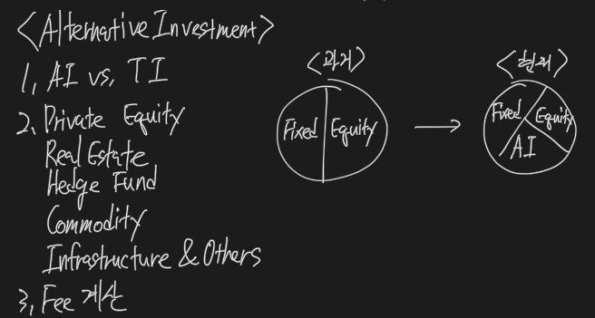

Alternative Investment
Overview

Alternative vs. Traditional

- Less liquidity
- More specialization
- Less regulation
- Less data
- Different legal and tax
- Relatively low correlations with returns of traditional investments
- High fees
- Restrictions on redemption
- Relatively more concentrated portfolios
Overview

Hedge Fund
- Leverage
- Long&Short
- 다양한 전략
- Managers of hedge funds use a great many different strategies.
- They do not necessarily hedge risk as the name might imply.
Private Equity
- Invest in the Equity of Company to take private
- LBO
- Established Company
- Venture Capital
- early stage
- Private equity funds invest in the equity of companies that are not publicly traded or in the equity of publicly traded firms that the fund intends to take private.
- Leveraged buyout (LBO) funds use borrowed money to purchase equity in established companies.
- A much smaller portion of these funds, venture capital funds, invest in or finance young unproven companies at various stages early in their existence.
Real Estate
- Invest in 상업용 or 주거용
- Invest in 부채 or 주식
- Real estate investments include residential or commercial properties as well as real estate backed debt.
Commodity
- Gain exposure to change in price
- own physical
- Derivative, Index
- Equity producing Company
- To gain exposure to changes in commodities prices, investors can own physical commodities, commodities derivatives, or the equity of commodity producing firms.
Infrastructure
- Invest in long lived asset
- 공공서비스
- Infrastructure refers to long-lived assets that provide public services.
Others
- Tangible collectable assets
- ex) 그림
- This category includes investment in tangible collectable assets such as fine wines, stamps, automobiles, antique furniture, and art, as well as patents, an intangible asset.
Private Equity

- LBO - private or public company를 인수
- Venture Capital - early stage에 투자
- Fee = Fund 결성 시 + 투자할 때 + 회수할 때
- LBO - Fund를 Debt로 financing 해서 조성
- 보통 Mezzanine 레벨의 Debt를 조달
- PE는 기업 인수 후 재매각을 위해 Firm의 value 상승을 도모
- High cash flow firm은 debt 상환에 좋으므로 PE에게 매력적이다
- The majority of private equity funds invest either in private companies or public companies they intend to take private (LBO funds), or in early stage companies (venture capital funds).
- Leveraged buyouts (LBOs) are the most common type of private equity fund investment.
- “Leveraged” refers to the fact that the fund’s purchase of the portfolio company is funded primarily by debt.
- This may be bank debt (leveraged debt), high-yield bonds, or mezzanine financing.
- In an LBO, the private equity firm seeks to increase the value of the firm through some combination of new management, management incentives, restructuring, cost reduction, or revenue enhancement.
- Firms with high cash flow are attractive LBO candidates because their cash flow can be used to service and eventually pay down the debt taken on for acquisition.
Venture Capital

- Venture capital (VC) funds invest in companies in the early stages of their development.
- While the risk of start-up companies is often great, returns on successful companies can be very high.
- Venture capital fund mangers are closely involved in the development of portfolio companies, often sitting on their boards or filling key management roles.
- Formative stage
- Angel stage - 개인투자, idea 단계
- Seed stage - product 생산 단계, VC 투자 시작
- Early stage - 상업화 단계, VC 추가 투자 가능
- Later stage - 상업화 운영 단계, 추가 확장
- Mezzanine stage - IPO 준비 단계, funding timing 중요
Fees

- Committed capital 기준으로 fee 부과
- capital call을 하기 전까지 invested capital이 아니지만, 항상 committed capital이 fee 부과 기준
- 운용보수
- Committed capital * 1 ~ 3%
- 성과보수
- Huddle rate를 넘어선 수익의 20%
- 펀드마다 다 다름
- soft huddle rate / hard huddle rate가 있고
- soft huddle rate - 수익 pool 전부가 성공보수 pool
- hard huddle rate - 지정된 huddle rate 초과 수익만이 성공보수 pool
- Claw-back
- 성과급을 미리 받았는데, 망해서 토해내는 조항
- PE는 exit을 통해 투자자들에게 돈을 돌려줘야 함
- Exit 방법
- Trade sale - PE가 아닌 제 3자에게 매각
- IPO
- Recapitalization - 대출받아서 배당 쏘기
- Secondary sale - 다른 PE에 매각
- Write-off / liquidation - 청산
- Management fees are typically 1% to 3% of committed capital, rather than invested capital.
- Incentive fees for private equity funds are typically 20% of profits, but these fees are not earned until after the fund has returned investors’ initial capital.
- A clawback provision requires investors receiving less than 80% of the profits generated by portfolio investments as a whole.
Private equity potential benefits and risks

- 평균 return이 PE > Equity
- 상관관계가 1보다 낮아서 분산효과가 있음
- PE의 표준편차가 Traditional Investment보다 높음
- 더 위험함
- 그러나 이 모든 데이터가 역사도 짧고, 선별적이라 의심이 됨
- Survivorship bias
- Back-fill bias
- 성과좋은 fund 취사선택
- 이 두가지 bias들 때문에 return-upward 발생 (risk-downward)
- There evidence that over the last 20 years returns on private equity funds have been higher on average than overall stock returns.
- Less-than-perfect correlation of private equity returns with traditional investment returns suggests that there may be portfolio diversification benefits form including private equity in portfolios.
- The standard deviation of private equity returns has been higher than the standard deviation of equity index returns, suggesting greater risk.
- Private equity returns data may suffer from survivorship bias and backfill bias (both lead to overstated returns). Because portfolio companies are revalued infrequently, reported standard deviations of returns are correlations of returns with equity returns may both be biased downward.
- Evidence suggests that choosing skilled fund managers is important.
Private equity due diligence

- 비상장이므로 revalue infrequently
- 상관관계 측정시 downward
- manager를 잘 고르는 것이 좋음
- Leverage 많이 씀 → 이자율 영향, 가용자금 상태체크
- 투자 전 Manager, Valuation, Market Fee structure 체크
- Because of the high leverage typically used for private equity funds, investors should consider how interest rates and the availability of capital may affect any required refinancing of portfolio company debt.
- The operating and financial experience of the manager (general partner), the valuation methods used, the incentive fee structures, and drawdown procedures are all important areas to investigate prior to investing.
Private Equity company valuation

- Market Approach - 비슷한 기업의 시장가치 base로 측정
- Market or private transaction values of similar companies may be used to estimate multiples of EBITDA, net income, or revenue to use in estimating the portfolio company’s value.
- DCF - 현금흐름 추정 후, 현재가치로 할인
- A dividend discount model falls into this category, as does calculating the present value of free cash flow to the firm or free cash flow to equity.
- Asset-Based Approach - 청산가치의 시장가치
- Either the liquidation values or fair market values of assets can be used.
- Liquidation values will be lower as they are values that could be realized quickly in a situation of financial distress or termination of company operations.
- Liabilities are subtracted so only the equity portion of the firm’s value is being estimated.
Real Estate

- 임대료 + capital gain + portfolio 분산효과 + inflation hedge
- Residential property
- Equity - 대출끼고 매입
- Debt
- MBS (mortgage backed security)
- Lender가 mortgage 모아서 pool 만들고, 증권발행
- 구매자는 개별 자산들에게 간접투자한 효과
- MBS (mortgage backed security)
- Commercial Real Estate
- Rent가 주요 수익
- Long-term time horizon, illiquidity, 투자규모로 인해 직접투자가 어려움
- limited partnership 지분 or REITs
- REITs
- 상장된 부동산 fund
- 장내에서 주식처럼 거래
- Tax benefit when 이익의 90% 배당
- 간접투자효과
- 그 외
- Timberland (산림, 임야투자), Farmland (농지투자)
- Investment in real estate can provide income in the form of rents as well as the potential for capital gains.
- Real estate as an asset class can provide diversification benefits to an investor’s portfolio and a potential inflation hedge because rents and real estate values tend to increase with inflation.
- Residential property
- is considered a direct investment in real estate.
- Issuers often sell the mortgage they originate and the mortgage are then pooled (securitized) as publicly traded mortgage-backed securities (MBS), which represent an indirect investment in the mortgage loan pool.
- Property purchased with a mortgage is referred to as a leveraged investment and the owner’s equity is the property value minus the outstanding loan amount.
- Commercial real estate
- generate income from rents.
- Large properties are a form of direct investment for institutions or wealthy individuals, either purchased for cash or leveraged.
- Long time horizons, illiquidity, the large size of investment needed, and the complexity of the investments make commercial real estate inappropriate for many investors.
- Commercial real estate limited liability and the general partner manages the investment and the properties, or by a real estate investment trust (REIT).
- Real estate investment trusts (REITs)
- issues shares that trade publicly like shares of stock.
- Income is used to pay dividends.
- Typically, 90% of income must be distributed to shareholders to avoid taxes on this income that would have to be paid by the REIT before distribution to shareholders.
- Timberland returns also include price changes on timberland, which depend on expectations of lumber prices in the future and how much timber has been harvested.
- Farmland returns are based on land price changes, changes in farm commodity prices, and the quality and quantity of the crops produced.
Benefit & Risk

- NCREIF
- Appraisal Index (감정평가 index) → 실시간 x, quarterly
- Smoothing
- 상관관계 낮음
- Repeat sales
- 특정 부동산 추이 → sample 오류 (전체를 반영하지 않음)
- REITs Index
- 주식시장에 상장되어 있기 때문에 Contagion effect가 있음
- REITs & Equity → 상관관계 높음 - 경기영향
- REITs & Bond → 상관관계 낮음 - 경기방어
- Real Estate를 portfolio에 편입하면 분산효과는 있는데 실제 효과는 잘 모르겠다.
Due Diligence

- 경기, 시장, 이자율에 영향을 받음
- Regulation (zoning, permitting 등) 영향도 있음
- Real Estate Valuation
- Comparable sales
- Income approach
- Cost approach
- REITs valuation
- FFO (Funds from operation) = Net Income + Depreciation + 매각차익(손)
- AFFO = FFO - CAPEX
- Asset based = Asset - Liability
Hedge Funds

- more flexible than traditional investment
- Prime Broker
- 보관, 관리, 대여, 거래 담당
- Return 종류
- Absolute, Relative
- less regulated than traditional investment
- 투자자 수가 적어서 flexible
- PE처럼 Limited partner 형태로 조직, Hedge Fund가 General partner 담당
- Traditional income보다 less liquid
- Locked up period
- Notice period
- 미리 빼려면 redemption fee 발생
- 투자자 고려사항
- Fund of fund
- Hedge fund에 투자하는 fund
- 장점
- 소규모 금액으로 가입 가능
- Due Diligence 가능
- 단점
- Double fee
Strategy

- Event driven
- Merger arbitrage - 피인수회사 long, 인수회사 short
- Distressed / restructuring - 구조조정
- active shareholder
- special situations
- Relative value - 일물일가 법칙 활용
- CB arbitrage
- Asset backed security (ABS)
- General fixed income
- Exploit pricing discrepancies between fixed income securities of various types.
- Volatility → Derivative
- Multi-strategy
- Macro strategy
- Equity hedge fund - 주식시장 투자 hedge fund
- Market neutral - 베타 = 0
- Fundatmental
- Growth, Value
- Quantitative directional
- short-bias
Benefit & Risk

- 하락장에선 주식보다 수익률 좋음
- 상승장에선 수익률이 지연되는 경향
- 전략이 너무 다양해서 분산효과가 명백히 있다고 말 못함
- Hedge fund returns have tended to be better than hose of global equities in down equity market and to lag the returns of global equities in up markets.
- Statements about the performance and diversification benefits of hedge funds are problematic because of the great variety of strategies used.
Due Diligence

- 소수고객이라 공시, 규제의무가 거의 없고, 투명성이 낮음 → 펀드 고르기 어려움
- 과거에 잘한 펀드가 미래에도 잘한다는 보장이 없음 → 펀드 고르기 어려움
- style에 대한 계량 평가가 힘듦 → 펀드 고르기 어려움
Valuation

- Hedge fund values are based on market values for traded securities in their portfolios but must use model (estimated) values for non-traded securities.
- In the case of illiquid securities, quoted market prices may be reduced for the degree of illiquidity, based on position size compared to the total value of such securities outstanding and their average trading volume.
Commodity

- 직접투자는 보관비용이 발생하기 때문에 보통 파생상품을 이용함
- Future, Forward, Option, Swap
- ETF - commodity or Index
- Equities that are directly linked to a commodity
- Price movements of the commodity may not be perfectly correlated.
- Managed Futures Fund - 선물 Fund
- Individual account
- Specialized Fund - 특정 원자재 투자 Fund
Benefit & Risk

- 주식, 채권보다 return은 낮으면서 sharp ratio도 낮았음
- 변동성도 컸음
- 그러나 주식, 채권과 상관관계가 낮아서 portfolio 편입시 분산효과가 있음
- Inflation hedge 효과도 있음
Price

- spot price - 현재의 수요와 공급으로 결정되는 지금의 가격
- Commodity는 공급이 비탄력적이라 가격변동성이 큼 → 선물 등장의 배경
- Future price = spot * (1 + risk free rate) + storage cost - Convenience yield
- Future > spot - Contango
- Roll yield가 마이너스
- Future < spot - Backwardation
- Roll yield가 플러스
- Roll yield - 선물가격의 변화
- 만기로 갈수록 future price는 spot price에 가까워짐
- Collateral yield - 실물을 빌려줄 때 이자수익
- Change in spot - 현물가격변화
- Spot prices for commodities are a function of supply and demand.
- For many commodities, supply is inelastic in the short run because of long lead times to alter production levels.
- As a result, commodity prices can be volatile when demand changes significantly over the economic cycle.
- Convenience yield is the value of having the physical commodity for use over the period of the future contract.
- If there is little no convenience yield, futures prices will be higher than spot prices, a situation termed contango. When the convenience yield is high, futures prices will be less than spot prices, a situation referred to as backwardation.
- Roll yield
- The yield due to a different between the spot price and futures price, or a different between two futures prices with different expiration dates.
- Roll yield is positive for a market in backwardation and negative for a market in contango.
- Collateral yield
- The interest earned on collateral required to enter into a futures contract.
- Change in spot prices
- The total price return is a combination of the change in spot prices and the convergence of futures prices to spot prices over the term of the futures contract.
Infrastructure

- Brown field
- 이미 운영 중인 인프라에 투자
- 안정적이지만 potential이 낮음
- Green field
- 운영 예정인 인프라에 투자
- 불안정하지만 potential이 높음
- 걸설 후 정부에게 리스를 줄 수도 있음
- Infrastructure는 투자기간이 길고, 비용이 크며, 유동성이 낮아서 ETF나 PE를 활용해서 투자
- 산효과가 있지만, 모든 Risk를 고려해야 함 - regulation
Other alternative investments

- 소득이 발생하지 않는 자산
- 보관비용이 높고 전문지식이 필요하며 유동성이 낮음
- 투자이익은 오직 price 상승에서만 획득 가능
- There is no income generation but owners do get enjoyment form use as with a collectible automobile.
- Storage costs may be significant, especially with art and wine.
- Specialized knowledge is required, the markets for many collectables are illiquid, and gains result only from increases in the prices of these assets.
Potential Benefit

- Alternative investment의 상관관계는 낮음 → 분산효과는 기대되지만, not always
- less reliable
- Return의 원인이 inefficiency
- Overall, Alternative investment가 portfolio의 return을 올려주는 것은 사실
- potential도 있음
- Alternative investment에 표준편차를 사용하는 것은 적절치 않음
- Fat-tail
- Because returns on alternative investments are less than perfectly correlated with returns on traditional investments, they have the potential to provide diversification benefits, decreasing portfolio risk.
- As a result, the anticipated diversification benefits are not always realized.
- One is that returns measures for alternative investments may be less reliable than returns measures for traditional investments.
- Another is that risks specific to alternative investments may increase their returns.
- Some of the returns may be explained by lack of liquidity, lack of transparency, and the risk incurred by the need to evaluate and select specific categories of alternative investments and select specific managers.
- Higher returns may also be explained by a skilled manger.
- Overall, alternative investment have the potential to improve the risk-return characteristics of a portfolio.
- Standard deviation, however, may not be the appropriate risk measure for alternative investments, as their returns often exhibit both skewness and positive excess kurtosis (fat tails).
Fee

- Total fee = management fee + incentive fee
- soft huddle rate
- 번 돈 전체가 성과급 pool
- hard huddle rate
- huddle rate의 초과 분만 성과급 pool
- high-water mark
- 성과보수는 이전 성과를 넘어야 지급
- Profits can be (1) any gains in value, (2) any gains in value in excess of the management fee, or (3) gains in excess of a hurdle rate.
- A hard huddle rate means that incentive fees are earned only on returns in excess of the benchmark.
- A soft huddle rate means that incentive fees are paid on all profits, but only if the hurdle rate is met.
- Another feature that is often included is called a high water mark. This means that the incentive fee is not paid on gains that just offset prior losses.
- This feature ensures that investors will not be charged incentive fees twice on the same gains in their portfolio values.
Risk management

- 표준편차 사용은 적절치 않음
- return fat-tail → negative skewed
- Alternative investment는 real-time 거래가 아니라서 → 표준편차와 상관관계가 understated
- Value at Risk (VaR)
- 특정 확률 내에서 예상되는 최소 손실
- Sortino Ratio
- 하방 표준편차만 고려한 샤프비율
- Derivative
- 거래 상대방 위험
- Mangement 평가 필요
- 비유동성 → 목표수익률을 추가로 요구할 것을 고려
- Standard deviation of returns may be a misleading measure of risk for two reasons.
- First, returns distributions are not approximately normal; they tend to be leptokurtic (fat tail) and negatively skewed (possibility of extreme negative outcomes).
- Second, for alternative assets that use appraisal or models to estimate values, returns are smoothed so that standard deviation of returns (and correlations with returns of traditional investments) will be understated.
- Investors should consider downside risk measures such as value at risk (VaR), which is an estimate of the size of a potential decline over a period that will occur.
- The sortino ratio, which measures risk as downside deviation rather than standard deviation.
- For publicly traded securities, such as REITs and ETSs, market returns are used and standard deviations of risk are more applicable.
- Use of derivatives introduces operational, financial, counterparty, and liquidity risk.
- Performance for some alternative investment categories is primarily determined by management expertise and execution.
- Hedge funds and private equity funds are much less transparent than traditional investments as they release less information and may consider their strategies to be proprietary information.
- Many alternative investments are illiquid. Returns should reflect a premium for lack of liquidity to compensate investors for liquidity risk or the inability to redeem securities at all during lockup periods.
- When calculating optimal allocations, indices of historical returns and standard deviations may not be good indicators of future returns and volatility.
- Correlations vary across periods and are affected by events.
Due Diligence
- Organization
- Portfolio management
- Operations and controls
- Risk management
- Legal review
- Fund terms